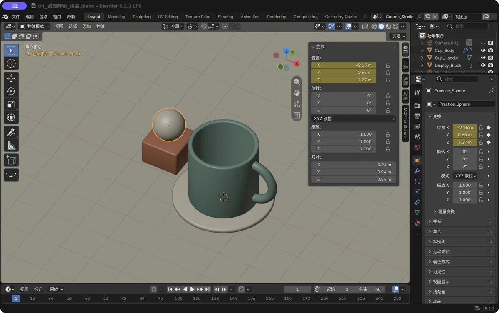
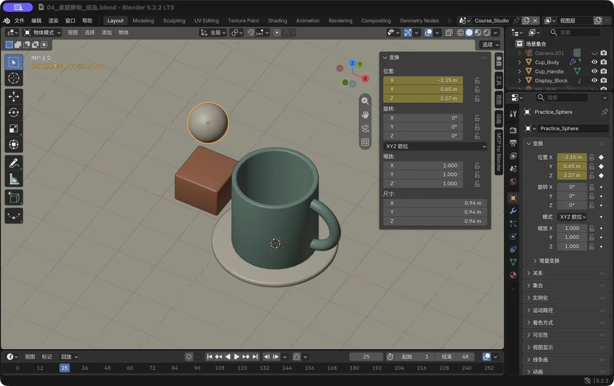
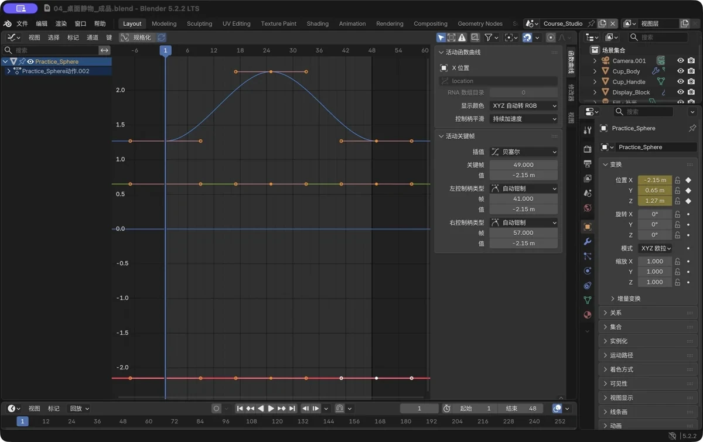

第 11 章 选修：让模型动起来——关键帧入门
场景：做了这么多静止的作品，让它们动起来其实只差一样东西——关键帧。这一章约 30 分钟，用一个弹跳的小球，把“动画”的底层逻辑理解一遍：某个属性，随时间变化。（选修章，跳过不影响主线。）
学完你会
- 理解动画的最小模型：属性 + 时间 + 关键帧；
- 会用
I插关键帧、用空格播放； - 会去曲线编辑器看一眼“插值”，并知道 Bezier（缓入缓出）和 Linear（匀速）的区别。
核心概念：动画 = 属性随时间变化
想象拍定格动画：你只拍 3 张画面——球在地面、球在空中、球又回到地面——播放时，软件自动把“缺的画面”补出来。
- 关键帧（Keyframe）：你在某一帧给某个属性（位置 / 旋转 / 缩放……）拍下的“快照”；
- 插值（Interpolation）：两张快照之间的中间值，由软件替你算出来；
- 所以做动画永远先问三个问题：哪个属性？哪些帧？怎么插？
记住这一句就够了：动画不是“会动的模型”，是“属性在时间轴上有了记录”。
跟着做：三个关键帧，小球跳起来
准备：去第 7 章的静物场景，或者随便搭一个——地上放一个小球（Shift+A → 网格 → 球体，G Z 让它贴地），相机对准它。
① 第 1 帧：落点高度
- 把时间轴当前帧停在 1；
- 选中小球，按
N打开侧栏； - 鼠标悬停在“位置”字段上，按
I——插上关键帧！字段会变黄，时间轴第 1 帧出现小标记。

图 92 真实软件截图：位置字段变黄 = 这一帧有关键帧了
② 第 25 帧：弹到最高点
- 当前帧改到 25；
- 把小球抬高（
GZ往上拖，或直接在 N 面板把 Z 改大）； - 再插一次关键帧——悬停“位置”，按
I。
⚠️ 只改位置、不插关键帧 = 白改。 这是新手头号错误：物体挪了，但“挪”这件事没有被记录下来，播放时它一动不动。

图 93 真实软件截图：第 25 帧球升高了，位置字段又一次变黄
③ 第 49 帧：回到起点
- 当前帧改到 49，把小球挪回第 1 帧的高度；
- 第三次按
I； - 把播放范围设成 1–48（第 49 帧是循环的接续点），帧率保持默认 24。
④ 播放：按空格——小球上上下下，你的第一个动画完成了。
看一眼“插值”：Bezier 与 Linear
- 顶部任意一个区域切成 Graph Editor（曲线编辑器）（或整页切到 Animation 工作区）；
- 选中小球，找 Z 位置那条曲线——起点低、中间高、回落，像座小山峰；线上那三个点就是关键帧；
- 全选关键帧 → 按
T→ 选 Linear（线性），再播放：上下变成“匀速”，机械感立刻出现； - 按
T换回 Bezier——默认的缓入缓出回来了：起步慢、到顶慢，更像被抛起来的小球。

图 94 真实软件截图：曲线编辑器里的 Z 曲线——关键帧之间的形状，就是“插值”本身
💡 这不是物理模拟。 小球没有重力、没有碰撞、没有形变——它只是“位置在三个时间点之间被插值”。想让弹跳更真实：自己设计时间间隔（下落快、弹起慢）、把落地瞬间的曲线调“硬”；再进一步，还可以给“缩放”也插关键帧，做落地瞬间的“压扁”效果。但底层永远是那三件事：属性、帧、插值。
新手常见坑
| 坑 | 说明 | 对策 |
|---|---|---|
| 只动位置没插帧 | 播放时一动不动 | 每次改完属性，悬停字段按 I；字段变黄才算数 |
| 插错了物体 / 属性 | 没选对物体，或悬停在了错误的字段上 | 撤销；到曲线编辑器里看是哪条曲线在动 |
| 播放范围没设置 | 播完卡住 / 只播半程 | 时间轴两端设置播放范围（本例 1–48） |
| 以为这就是“物理引擎” | 位置插值没有重力与碰撞 | 想更真实：自己调时间与曲线（见上）；要真物理碰撞得上刚体模拟（进阶） |
| 想导出视频 | 逐帧渲染后还要合成 | 渲染输出的格式改成 FFmpeg 视频，一次渲染动画；本书演示静止帧即可 |
过关标准
- 我给小球完成过一次“三个关键帧”的弹跳，并按空格播放成功；
- 我去曲线编辑器看过那条曲线，并切换过 Bezier / Linear 对比效果；
- 我能说出“动画 = 属性随时间变化”，以及关键帧、插值各是什么。
自检题
- 动画的“三要素”是什么？
- 怎么判断一个属性“已经插上关键帧”了？（两个地方能看出来）
- Bezier 和 Linear 两种插值，播放效果有什么不同？
- 小球弹跳这个练习是物理模拟吗？为什么？
答案见文末。
自检题答案
- 哪个属性、哪些帧（关键帧）、怎么插值。
- 属性字段变黄、时间轴出现小标记；曲线编辑器里能看到关键点。
- Bezier 缓入缓出（慢—快—慢，更自然）；Linear 匀速（机械感）。
- 不是——只是位置在几个时间点之间被插值，没有重力、碰撞和形变。
小结
- 动画 = 某个属性随时间变化；关键帧是快照，中间由插值算出。
- 插入：悬停属性字段按
I（变黄才算插上）；播放：空格。 - 插值：Bezier 缓入缓出（默认）↔ Linear 匀速，按
T切换。 - 进阶彩蛋：给缩放也插帧，能做出“落地压扁”的小动画。
- 到这里你拥有的是“会动的作品”了——恭喜，把这条线跑通，你已经摸到了整个动画世界的地基。